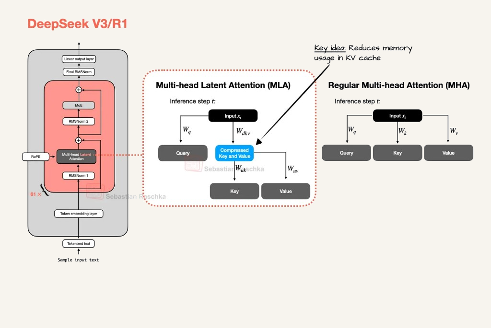

Лекция 2. Эволюция трансформеров к современным LLM-архитектурам14
Мультиголовое скрытое внимание MLA

Слева блок DeepSeek-V3, повторённый 61 раз. В центре один шаг MLA: из входа xt матрица Wq даёт запрос, а Wdkv — сжатые ключ и значение, синий блок. В кэш кладут его. Wuk и Wuv разворачивают этот вектор в ключ и значение. Справа обычное MHA: ключ и значение хранятся целиком. Стрелка RoPE входит в тот же блок.
GQA делит готовые головы ключа. MLA хранит на токен один короткий латентный вектор и собирает из него головы. У DeepSeek-V3 ранг этого вектора 512 при 128 головах внимания. Сжатие есть и у запроса, на рисунке его опустили.